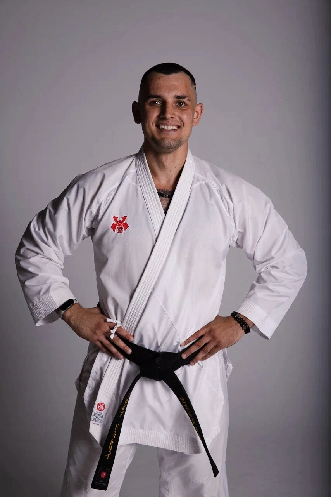
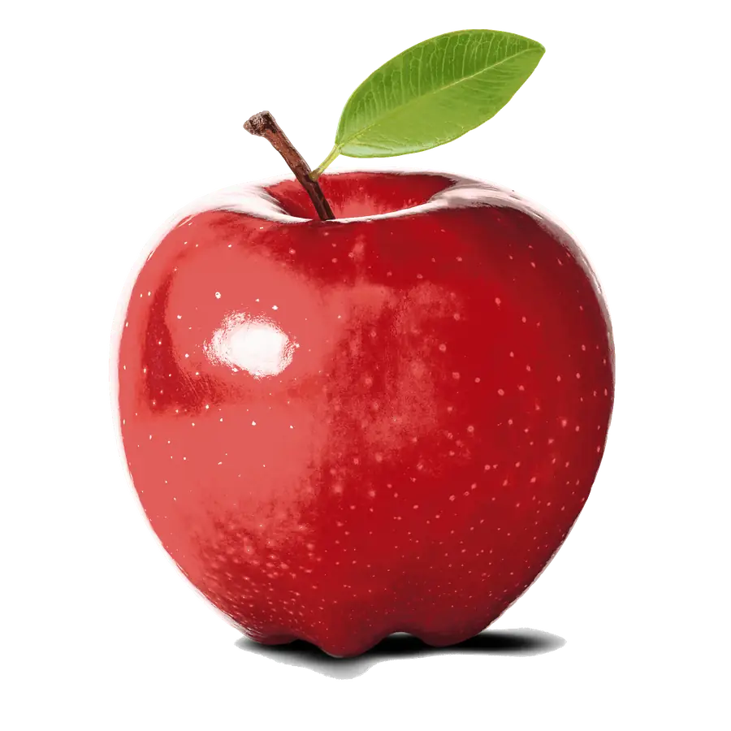

Плохих Дмитрий Юрьевич
Президент Федерации WKC КО
Мастер спорта России. 2 Дан. Стаж — 15 лет.
Сила, характер и уважение — тренировки для всех возрастов
Школа каратэ «Плохиш» — это не просто спортивная секция, это место, где рождаются чемпионы и формируются личности. Более 15 лет мы верим в силу каратэ как инструмента воспитания дисциплины, уважения и духовного совершенствования.
Каратэ — это боевое искусство, которое развивает не только физическую силу, но и психологическую устойчивость. Наши ученики постигают принципы мудрости, мужества и самоконтроля, которые применяют в повседневной жизни. В нашем клубе каждый находит своё место вне зависимости от возраста и физической подготовки.
Наши тренеры — мастера спорта России, чемпионы и мировые призёры, прошли длительный путь подготовки и готовы поделиться своими знаниями. Мы гордимся атмосферой взаимопомощи и дружбы, которая царит в клубе. Единственный враг здесь — лень, а единственная награда — постоянный рост.
Философия нашего клуба: Мы верим, что каратэ — это не просто способ защиты, это путь развития личности. Каждый ученик, независимо от возраста и пола, может достичь высоких результатов при наличии упорства и желания. Наш девиз: «Мастерство рождается из повторения и уважения».

Каждое занятие начинается с интенсивной разминки для разогрева мышц, суставов и подготовки организма. Это укрепляет сердечно-сосудистую систему и предотвращает травмы.
Под руководством опытного тренера вы изучаете базовые удары, блоки и стойки. Каждое движение имеет смысл и разучивается медленно, от простого к сложному.
Отработка техники на мешках, лапах и с партнёром. Это развивает точность, скорость и мощь ударов в реальных условиях боевого применения.
На продвинутых уровнях — контролируемые поединки с партнёрами в защитном снаряжении. Это учит тактике и уверенности в себе.
Занятие заканчивается медитацией и растяжкой. Это успокаивает ум и способствует быстрому восстановлению организма после нагрузок.
Каждая тренировка длится 60-120 минут в зависимости от уровня подготовки. Группы разделены по возрастам и мастерству, чтобы каждый мог тренироваться в максимально комфортном темпе и условиях.

Президент Федерации WKC КО
Мастер спорта России. 2 Дан. Стаж — 15 лет.

Старший тренер
3-кратная чемпионка Мира. Мастер спорта России. 2 Дан. Стаж — 9 лет.
Психологическая устойчивость. Каратэ учит медитативности и контролю эмоций. Ребёнок становится спокойнее, увереннее и избавляется от тревожности.
Физическое развитие. Тренировки укрепляют мышцы, улучшают координацию, развивают гибкость, выносливость и быстроту рефлексов.
Концентрация и внимание. Единоборство требует полной сосредоточенности. Это помогает и в учёбе, и в повседневных задачах.
Уверенность в себе. Система поясов и прогрессивного обучения позволяет видеть постоянный прогресс. Каждая победа над собой повышает самооценку.
Нравственные ценности. Ребёнок учится уважению к сопернику, помощи товарищам и честности. Кодекс чести каратэ становится жизненным принципом.
Дисциплина и самодисциплина. Каратэ учит ответственности перед тренером, командой и собой. Это формирует привычку к регулярным тренировкам и целеустремлённости.
Система кю в каратэ WKC — это путь постоянного совершенствования от 10-го кю до чёрного пояса. Каждый уровень символизирует не просто технику, но и духовный рост, дисциплину и преданность искусству каратэ. Полный путь от белого пояса до чёрного требует примерно 9–10 лет регулярных тренировок.
Символ чистоты
Срок: 3–4 месяца
«В сознании новичка много возможностей, в сознании знатока — лишь несколько». — Сюнрю Судзуки
Начало пути. Ученик приходит как «чистый лист», готовый впитывать знания. Избавление от предвзятости и открытость — главные качества на этом уровне.
Переход к пробуждению
Срок: 3–4 месяца
Первые проблески понимания. Ученик начинает чувствовать разницу между правильным и неправильным движением. Базовая техника становится привычной.
Символ пробуждения
Срок: 4–5 месяцев
«Изучение боевых искусств подобно восхождению на гору: нужно упорство, чтобы увидеть горизонт». — Чой Хон Хи
Первый луч солнца. Ученик начинает понимать, что каратэ — это не только сила, но и путь развития собственной личности.
Переход к стабильности
Срок: 4–5 месяцев
Техника начинает стабилизироваться. Первые комбинации ударов, первые серьёзные тренировки — ученик начинает ощущать собственный потенциал.
Символ стабильности
Срок: 5–6 месяцев
«Секрет успеха — в постоянстве цели». — Бенджамин Дизраэли
Цвет укрепляющейся веры. Техника становится приземлённой и стабильной. Тело привыкает к нагрузкам, появляется первая серьёзная выносливость.
Переход к росту
Срок: 5–6 месяцев
Переходный уровень. Ученик способен помогать уже менее продвинутым. Техника становится более осознанной и естественной.
Символ роста и расцвета
Срок: 6–8 месяцев
«Тот, кто победил себя, сильнее того, кто победил в битве тысячу человек». — Будда
Символ жизни и расцвета. Подобно дереву, боец пускает корни. Техника становится естественной, движения — осознанными. Ученик начинает чувствовать ритм поединка.
Переход к спокойствию
Срок: 6–8 месяцев
Переходный уровень к синему поясу. Ученик начинает развивать лидерские качества и помогает младшим. Начало понимания, что физическая сила — не главное.
Символ текучести и глубины
Срок: 8–10 месяцев
«Опустоши свой разум. Будь бесформенным и мягким, как вода». — Брюс Ли
Цвет неба и морских глубин. Ученик учится контролировать эмоции, быть гибким и адаптироваться к любому противнику. Спокойствие и масштаб мышления.
Символ зрелости и глубоких корней
Срок: 12–18 месяцев
«Тренируйтесь больше, чем спите. Идите по пути, не сворачивая, пока не достигнете цели». — Масутацу Ояма
Цвет земли и созревания. Это этап оттачивания мастерства до автоматизма. Техника отточена, разум готовится к переходу на новый уровень — мудрости чёрного пояса.
Символ мудрости
Срок подготовки: 1.5–2 года
«Чёрный пояс — это не конец пути, а всего лишь новое начание». — Мицуё Маэда
Символ профессионализма и мудрости. Это не финал, а новое начало истинного мастерства. Говорят, что мастер долго носит чёрный пояс, пока тот не протирается и снова не становится белым — возвращение к смирению новичка.
Важно помнить: каждый пояс — это не просто техническое достижение, это результат упорных тренировок, преодоления себя и постоянного развития. Философия каратэ учит, что путь важнее цели. После достижения чёрного пояса ученик может продолжать совершенствоваться, достигая высших данов (вплоть до 10-го дана).

6
42
32
12
5
2
4
5
Клуб «Плохиш» открыл свои двери для первых учеников в Курске.
Участие в региональных соревнованиях и первые медали.
Открытие тренировочной базы с татами и раздевалками.

Спортсмены клуба заняли призовые места на турнирах WKC.
Отличный клуб! Дети в восторге, тренеры внимательные и профессиональные.
— Мария К.Очень уютная атмосфера, сын с радостью ходит на тренировки!
— Алексей П.Нет
—Отличный клуб! Дети в восторге, тренеры внимательные и профессиональные.
— Мария К.Присоединяйтесь к нашей команде каратистов! Мы открыты для новичков всех возрастов. Первая пробная тренировка абсолютно бесплатна. Позвоните нам или напишите в группу в ВКонтакте, и наши тренеры подберут для вас оптимальное время занятий.
Главный номер
+7 (951) 311-94-11
Тренер Дмитрий Юрьевич
ВКонтакте
Перейти в группу
Расписание и новости
Email
example@mail.ru
Для вопросов и предложений
Филиал 1: ул. 50 лет Октября
ул. 50 лет Октября, 141
Тренировки: пн, ср, пт 17:00-20:00
Филиал 2: ТЦ Пушкинский
ул. Ленина, 30 — 4 этаж
Тренировки: вт, чт, сб 16:00-19:00
Первая тренировка
БЕСПЛАТНО
Приходите в спортивной одежде
